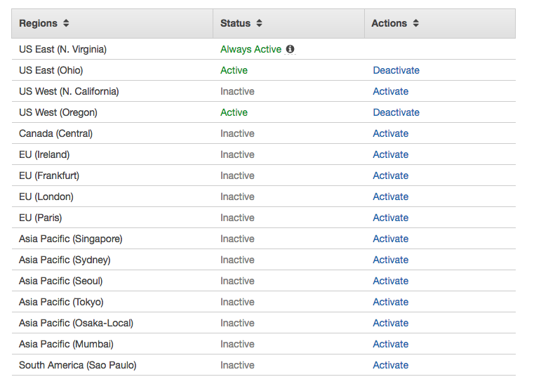
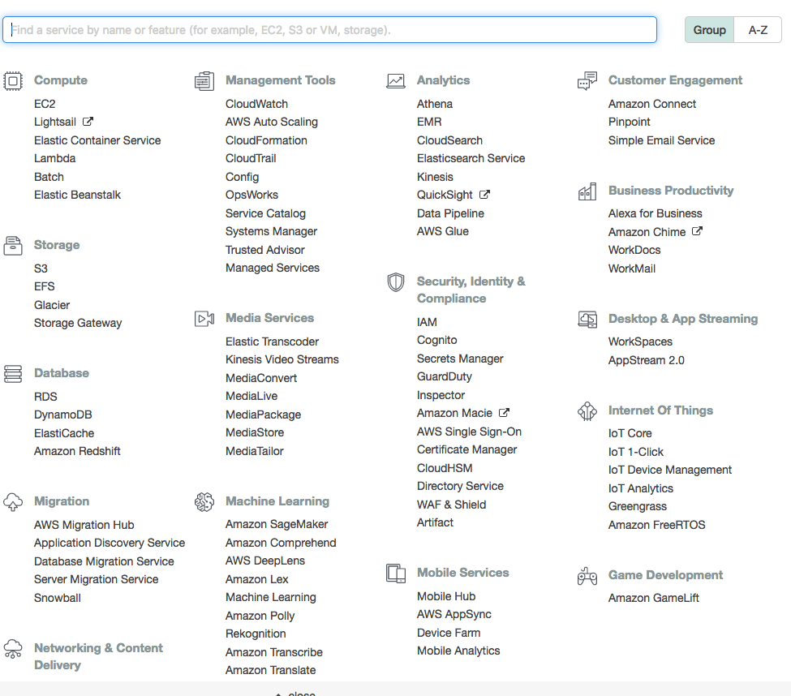

Walkthrough: Intro to AWS
We will walkthrough getting signed into AWS console and then have a look around
Look Around AWS Console
Top Menu
- Has drop down menu for your account
- Has drop down menu for the current Region
- Support Menu for getting help or finding docs
Regions
Regions are seperate geographic locations where you can deploy AWS services. Everything in the AWS UI is based off of Region, so if you don't see a instance you created you are probably in the wrong Region. More about Regions and Availability Zones

Services Search Bar and Menu
This is where AWS can get a little overwhelming because there are so many services available. We are only to look at a
few in the class. On your own time, please read about all the new terms/tools you see listed here. You may want to use
them some day. Our focus today is EC2.

Setup You AWS Account
Logging into AWS
- Please check your email for an invite to AWS Console from your instructor
- Reset Password
Add Two Factor Authentication
- Go to IAM via Services
- Click Users
- Click your username
- Click Security credentials tab
- Click the pencil for Assigned MFA device
- Download an Authenticator such as Google Authenticator on your phone
- Open the Authenticator app
- Now connection your Authenticator app by entering informatin provided by AWS
- Now you have to enter a key from your Auth app into AWS and then wait for it to expire and enter the next key that appears
- Now log out and see if works. Fingers crossed.